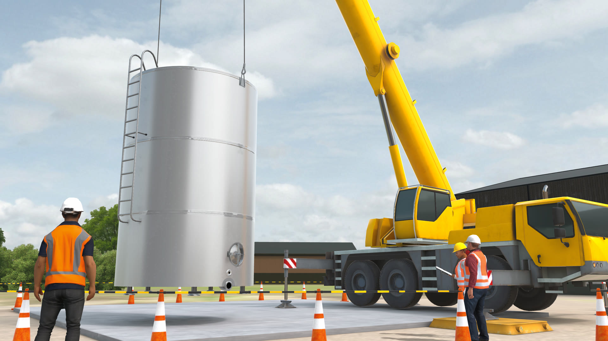

-
Construction site, elevated platform -
Residential build, exterior and interior -
Roadworks and traffic management
Industrial VR safety training
Three modules · captured in headset
- Unity
- VR
- Environment art
- Real-time
- Lighting